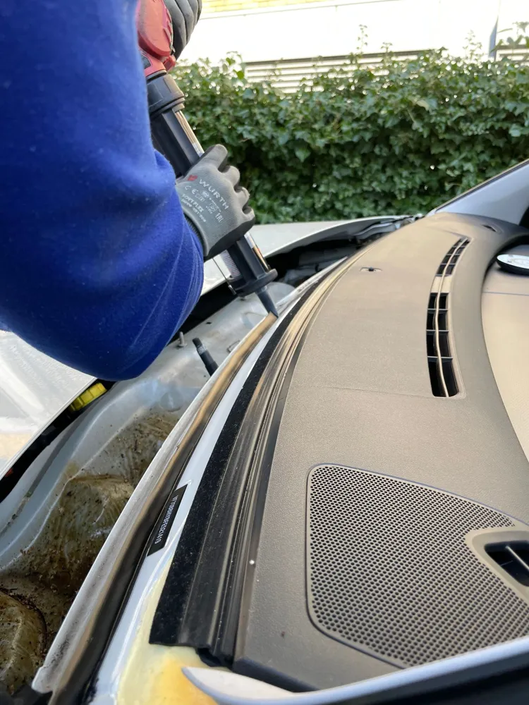

Car Window Replacement in Cocoa, FL
Car window replacement in Cocoa for broken door glass, rear windshields, and quarter windows. We clean out the broken glass and install the new window at your home or work.
What Does Car Window Replacement Involve?
Car window replacement in Cocoa starts with removing the inside door panel and vacuuming out the broken tempered glass. Side windows shatter into thousands of small pieces, and they collect inside the door, under the seats, and in the window tracks.
The technician installs the new glass on the window regulator, checks that it rolls up and down smoothly, and reinstalls the door panel. Rear windshields are set in urethane like a front windshield, and the defroster lines are reconnected.

When Do You Need Car Window Replacement in Cocoa?
You need car window replacement in Cocoa any time a side, rear, or quarter window is broken or will not stay closed.
- A window smashed during a break-in
- Glass broken by storm debris or a falling branch
- A rear windshield cracked by an impact or heat
- A window that fell into the door after a regulator failure
Why Do Car Windows Break in Cocoa?
Car windows in Cocoa usually break from impacts. Break-ins at parking lots and beach access points, flying debris during summer storms and hurricane season, and stray rocks from mowers are the most common causes.
Side and rear glass is tempered, which makes it strong but means any break shatters the whole pane. That is different from the laminated front windshield, which cracks but stays in one piece.
What Affects the Cost of Car Window Replacement in Cocoa?
The cost of car window replacement in Cocoa depends on which window broke and what is built into it. Rear windshields with defroster lines, antennas, or privacy tint cost more than a basic front door window. Quarter and vent windows vary a lot by vehicle.
Insurance may cover a broken window under comprehensive coverage, usually after your deductible. Call (321) 417-3847 with your vehicle details for an exact quote.
Side Window vs. Rear Windshield Replacement: What’s the Difference?
Side window replacement
Door and quarter glass is mounted on a regulator or in a gasket. The job focuses on cleaning out shattered glass and making sure the window rolls smoothly.
Rear windshield replacement
Back glass is bonded in with urethane and often has defroster lines and antennas. It needs adhesive cure time like a front windshield.
Front glass damage? See windshield replacement in Cocoa.
Frequently Asked Questions
How fast can you replace a broken car window in Cocoa?
A broken car window in Cocoa can often be replaced within a day or two, depending on glass availability for your vehicle. Common door windows are usually quick to get. Until then, we recommend covering the opening with plastic and parking in a garage if storms are expected.
Do you clean up the broken glass?
Yes, car window replacement in Cocoa includes cleaning out the broken glass. The technician vacuums the seats, floor, and inside the door panel where tempered glass pieces collect. This keeps loose shards from rattling or jamming the new window.
Does insurance cover a broken car window in Florida?
A broken car window in Florida is usually covered under comprehensive insurance, typically after your normal deductible. The no-deductible windshield rule in Florida generally applies to the front windshield only. Check your policy or ask us to help when you call about car window replacement in Cocoa.
Cracked or Chipped Glass in Cocoa?
Call now for a free auto glass quote. We come to your home or job site anywhere in central Brevard County.
Call (321) 417-3847 for a Free Quote